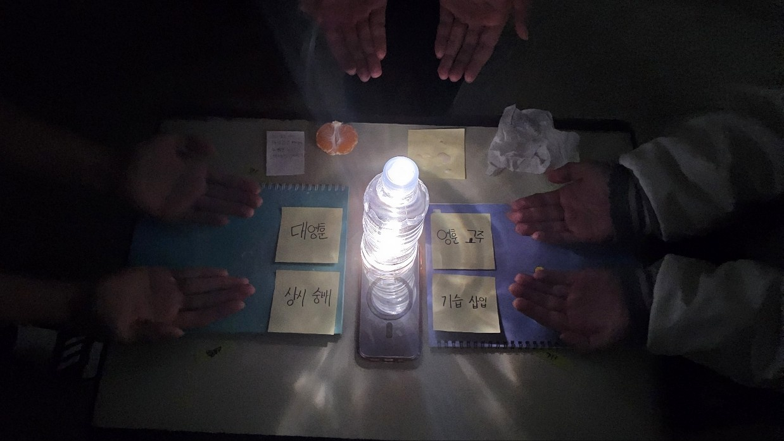

정영훈 前 대통령 사이비 교주로 밝혀져 큰 논란 일어... 대선 방향 바뀌나...
이동건 신도 "제 세상은 영훈 교1추님을 만난 이후로 변했어요."
윤혜성 現 추기경 약 0.123456789 달러 사용하여 소환진 만들어...
잉 앗살라 말라이꿈

사진첨부-> 의식하는 영고훈추교(기무상 기자)
위 사진은 영고훈추교의 의식이다. 이들은 왜 영고훈추교를 믿게된 것인가?
이를 알아보기 위해서는 영고훈추교의 근원지를 살펴 볼 필요가 있다.
이는 대구
와룡산 깊은 동굴-에서 시작되었다.
그곳에서는 아1주 큰 대1물 인간이 살고 있었는데
이는 곧 정영훈 전 대통령이 될 정영훈(당시 추정치 약 31cm)
이 대1물로 정신을 개조하여 신도들을 늘려 간 것이다.
이는 평소 섹시댄스로 대선을 이긴 정영훈 전 대통령에게는 아1주 큰 타격이었을 것이다.